특수용접기능사 (2014-01-26 기출문제)
1과목: 용접일반
1. 다음 중 정전압 특성에 관한 설명으로 옳은 것은?
- 부하 전압이 변화하면 단자 전압이 변하는 특성
- 부하 전류가 증가하면 단자 전압이 저하하는 특성
- 부하 전류가 변화하여도 단자 전압이 변하지 않는 특성
- 부하 전류가 변화하지 않아도 단자 전압이 변하는 특성
(정답률: 80%)

2. 다음 중 연강 용접봉에 비해 고장력강 용접봉의 장점이 아닌 것은?
- 재료의 취급이 간단하고 가공이 용이하다.
- 동일한 강도에서 판의 두께를 얇게 할 수 있다.
- 소요 강재의 중량을 상당히 무겁게 할 수 있다.
- 구조물의 하중을 경감시킬 수 있어 그 기초공사가 단단해진다.
(정답률: 75%)
3. 다음 중 피복 아크 용접에 있어 위빙 운봉 폭은 용접봉 심선 지름의 얼마로 하는 것이 가장 적절한가?
- 1배 이하
- 약 2~3 배
- 약 4~5배
- 약 6~7배
(정답률: 91%)
4. 피복 아크 용접에서 용접속도(welding speed)에 영향을 미치지 않는 것은?
- 모재의 재질
- 이음 모양
- 전류값
- 전압값
(정답률: 54%)
5. 다음 중 가스 불꽃의 온도가 가장 높은 것은?
- 산소 - 메탄 불꽃
- 산소 - 프로판 불꽃
- 산소 - 수소불꽃
- 산소 - 아세틸렌 불꽃
(정답률: 88%)
6. 다음 중 아크 에어 가우징시 압축공기의 압력으로 가장 적합한 것은?
- 1~3 kgf/㎠
- 5~7 kgf/㎠
- 9~15 kgf/㎠
- 11~20 kgf/㎠
(정답률: 76%)
7. 다음 중 직류 아크 용접의 극성에 관한 설명으로 틀린 것은?
- 전자의 충격을 받는 양극이 음극보다 발열량이 작다.
- 정극성일 때는 용접봉의 용융이 늦고 모재의 용입은 깊다.
- 역극성일 때는 용접봉의 용융속도는 빠르고 모재의 용입이 얕다.
- 얇은 판의 용접에는 용락(burn through)을 피하기 위해 역극성을 사용하는 것이 좋다.
(정답률: 69%)
8. 다음중 원판상의 롤러 전극 사이에 용접할 2장의 판을 두고 가압, 통전하여 전극을 회전시키며 연속적으로 점용접을 반복하는 용접법은?
- 심 용접
- 프로젝션 용접
- 전자빔 용접
- 테르밋 용접
(정답률: 64%)
9. 다음 중 정격 2차 전류가 200A, 정격 사용률이 40%의 아크 용접기로 150A 의 용접전류를 사용하여 용접하는 경우 사용률은 약 몇 % 인가?
- 33%
- 40%
- 50%
- 71%
(정답률: 58%)
10. 다음 중 가연성 가스가 가져야 할 성질과 가장 거리가 먼 것은?
- 발열량이 클 것
- 연소속도가 느릴 것
- 불꽃의 온도가 높을 것
- 용융금속과 화학반응을 일으키지 않을 것
(정답률: 81%)
11. 다음 중 전기용접에 있어 전격방지기가 기능하지 않을 경우 2차 무부하 전압은 어느 정도가 가장 적합한가?
- 20~30V
- 40~50V
- 60~70V
- 90~100V
(정답률: 71%)
12. 다음 중 고속분출을 얻는데 적합하고, 보통의 팁에 비하여 산소의 소비량이 같을 때 절단속도를 20~25% 증가시킬 수 있는 절단 팁은?
- 직선형 팁
- 산소 - LP형 팁
- 보통형 팁
- 다이버전트형 팁
(정답률: 74%)
13. 다음 중 산소-아세틸렌가스 용접에서 주철에 사용하는 용제에 해당하지 않는 것은?
- 붕사
- 탄산나트륨
- 염화나트륨
- 중탄산나트륨
(정답률: 53%)
14. 다음은 수중 절단(underwater cutting) 에 관한 설명으로 틀린 것은?
- 일반적으로 수중 절단은 수심 45m 정도까지 작업이 가능하다.
- 수중 작업 시 절단 산소의 압력은 공기 중에서의 1.5~2배로 한다.
- 수중 작업 시 예열 가스의 양은 공기 중에서의 4~8배 정도로 한다.
- 연료가스로는 수소, 아세틸렌, 프로판, 벤젠 등이 사용되나 그 중 아세틸렌이 가장 많이 사용된다.
(정답률: 81%)
15. 강재의 가스 절단 시 팁 끝과 연강판 사이의 거리는 백심에서 1.5~2.0mm 정도 떨어지게 하며, 절단부를 예열하여 약 몇 ℃ 정도가 되었을 때 고압산소를 이용하여 절단을 시작하는 것이 좋은가?
- 300~450℃
- 500~600℃
- 650~750℃
- 800~900℃
(정답률: 52%)
16. 내용적이 40L, 충전압력이 150kgf/cm2인 산소용기의 압력이 50kgf/cm2까지 내려갔다면 소비한 산소의 량은 몇 L인가?
- 2000L
- 3000L
- 4000L
- 5000L
(정답률: 61%)
17. 다음 중 연강용 피복 아크 용접봉 피복제의 역할과 가장 거리가 먼 것은?
- 아크를 안정하게 한다.
- 전기를 잘 통하게 한다.
- 용착금속의 급랭을 방지한다.
- 용착금속의 탈산 및 정련작용을 한다.
(정답률: 74%)
18. 담금질 가능한 스테인리스강으로 용접 후 경도가 증가하는 것은?
- STS 316
- STS 304
- STS 202
- STS 410
(정답률: 64%)
19. 다음 중 저융점 합금에 대하여 설명한 것 중 틀린 것은?
- 납 (Pb: 용융점 327℃)보다 낮은 융점을 가진 합금을 말한다.
- 가융합금이라 한다.
- 2원 또는 다원계의 공정합금이다.
- 전기 퓨즈, 화재경보기, 저온땜납 등에 이용된다.
(정답률: 51%)
20. 열처리방법에 따른 효과로 옳지 않은 것은?
- 불림 - 미세하고 균일한 표준조직
- 풀림 - 탄소강의 경화
- 담금질 - 내마멸성 향상
- 뜨임 - 인성 개선
(정답률: 55%)
21. 고 Ni의 초고장력강이며 1370 ~ 2060 Mpa의 인장강도와 높은 인성을 가진 석출경화형 스테인리스강의 일종은?
- 마르에이징(maraging)강
- Cr 18% - Ni 8%의 스테인리스강
- 13% Cr강의 마텐자이트계 스테인리스강
- Cr 12 - 17%, C 0.2%의 페라이트계 스테인리스강
(정답률: 37%)
22. 다음 중 대표적인 주조 경질 합금은?
- HSS
- 스텔라이트
- 콘스탄탄
- 켈멧
(정답률: 37%)
23. 침탄법을 침탄제의 종류에 따라 분류할 때 해당되지 않는 것은?
- 고체 침탄법
- 액체 침탄법
- 가스 침탄법
- 화염 침탄법
(정답률: 79%)
24. 금속의 공통적 특성이 아닌 것은?
- 상온에서 고체이며 결정체이다. (단, Hg은 제외)
- 열과 전기의 양도체이다.
- 비중이 크고 금속적 광택을 갖는다.
- 소성변형이 없어 가공하기 쉽다.
(정답률: 66%)
25. 비자성이고 상온에서 오스테나이트 조직인 스테인리스강은? (단, 숫자는 %를 의미한다)
- 18 Cr - 8 Ni 스테인리스강
- 13 Cr 스테인리스강
- Cr계 스테인리스강
- 13 Cr - Al 스테인리스강
(정답률: 80%)
26. 구리는 비철재료 중에 비중을 크게 차지한 재료이다. 다른 금속재료와의 비교 설명 중 틀린 것은?
- 철에 비해 용융점이 높아 전기제품에 많이 사용된다.
- 아름다운 광택과 귀금속적 성질이 우수하다.
- 전기 및 열이 전도도가 우수하다.
- 전연성이 좋아 가공이 용이하다.
(정답률: 68%)
27. 크롬강의 특징을 잘못 설명한 것은?
- 크롬강은 담금질이 용이하고 경화층이 깊다.
- 탄화물이 형성되어 내마모성이 크다.
- 내식 및 내열강으로 사용한다.
- 구조용은 W, V, Co를 첨가하고 공구용은 Ni, Mn, Mo을 첨가한다.
(정답률: 54%)
28. 청동은 다음 중 어느 합금을 의미하는가?
- Cu - Zn
- Fe - Al
- Cu - Sn
- Zn - Sn
(정답률: 62%)
29. 용접부의 표면이 좋고 나쁨을 검사하는 것으로 가장 많이 사용하며 간편하고 경제적인 검사방법은?
- 자분검사
- 외관검사
- 초음파검사
- 침투검사
(정답률: 84%)
30. 아크 용접 작업에 관한 안전 사항으로서 올바르지 않은 것은?
- 용접기는 항상 환기가 잘되는 곳에 설치할 것
- 전류는 아크를 발생하면서 조절할 것
- 용접기는 항상 건조되어 있을 것
- 항상 정격에 맞는 전류로 조절할 것
(정답률: 84%)
31. 서브머지드 아크용접에 사용되는 용융형 용제에 대한 특징 설명 중 틀린 것은?
- 흡수성이 거의 없으므로 재건조가 불필요하다.
- 미용융 용제는 다시 사용이 가능하다.
- 고속 용접성이 양호하다.
- 합금 원소의 첨가가 용이하다.
(정답률: 31%)
32. 보통 화재와 기름 화재의 소화기로는 적합하나 전기 화재의 소화기로는 부적합한 것은?
- 포말 소화기
- 분말 소화기
- CO2 소화기
- 물 소화기
(정답률: 51%)
33. 다음 중 용접성 시험이 아닌 것은?
- 노치 취성 시험
- 용접 연성 시험
- 파면 시험
- 용접 균열 시험
(정답률: 60%)
34. 용접 결함 방지를 위한 관리기법에 속하지 않는 것은?
- 설계도면에 따른 용접 시공 조건의 검토와 작업 순서를 정하여 시공한다.
- 용접 구조물의 재질과 형상에 맞는 용접 장비를 사용한다.
- 작업 중인 시공 상황을 수시로 확인하고 올바르게 시공할 수 있게 관리한다.
- 작업 후에 시공 상황을 확인하고 올바르게 시공할 수 있게 관리한다.
(정답률: 77%)
35. 용접부의 인장응력을 완화하기 위하여 특수해머로 연속적으로 용접부 표면층을 소성변형 주는 방법은?
- 피닝법
- 저온응력 완화법
- 응력제거 어닐링법
- 국부가열 어닐링법
(정답률: 83%)
2과목: 용접재료
36. 이산화탄소 아크 용접에서 일반적인 용접작업(약 200A 미만) 에서의 팁과 모재간 거리는 몇 mm 정도가 가장 적합한가?
- 0 ~ 5mm
- 10 ~ 15mm
- 40 ~ 50mm
- 30 ~ 40mm
(정답률: 70%)
37. 점용접 조건의 3대 요소가 아닌 것은?
- 고유저항
- 가압력
- 전류의 세기
- 통전시간
(정답률: 71%)
38. 경납용 용제의 특징으로 틀린 것은?
- 모재와 친화력이 있어야 한다.
- 용융점이 모재보다 낮아야 한다.
- 모재와의 전위차가 가능한 한 커야 한다.
- 모재와 야금적 반응이 좋아야 한다.
(정답률: 60%)
39. 액체 이산화탄소 25kg 용기는 대기 중에서 가스량이 대략 12700 L이다. 20L/min의 유량으로 연속 사용할 경우 사용 가능한 시간(hour)은 약 얼마인가?
- 60시간
- 6시간
- 10시간
- 1시간
(정답률: 63%)
40. 파장이 같은 빛을 렌즈로 집광하면 매우 작은 점으로 집중이 가능하고 높은 에너지로 집속하면 높은 열을 얻을 수 있다. 이것을 열원으로 하여 용접하는 방법은?
- 레이저 용접
- 일렉트로 슬래그 용접
- 테르밋 용접
- 플라즈마 아크 용접
(정답률: 83%)
41. 티그 용접의 전원 특성 및 사용법에 대한 설명이 틀린 것은?
- 역극성을 사용하면 전극의 소모가 많아진다.
- 알루미늄 용접 시 교류를 사용하면 용접이 잘된다.
- 정극성은 연강, 스테인리스강 용접에 적당하다.
- 정극성을 사용할 때 전극은 둥글게 가공하여 사용하는 것이 아크가 안정된다.
(정답률: 57%)
42. 플러그 용접에서 전단 강도는 일반적으로 구멍의 면적당 전용착금속 인장강도의 몇 % 정도로 하는가?
- 20~30%
- 40~50%
- 60~70%
- 80~90%
(정답률: 47%)
43. 용접에서 변형교정 방법이 아닌 것은?
- 얇은 판에 대한 점 수축법
- 롤러에 거는 방법
- 형재에 대한 직선 수축법
- 노내 풀림법
(정답률: 67%)
44. 이산화탄소 가스 아크 용접에서 아크 전압이 높을 때 비드 형상으로 맞는 것은?
- 비드가 넓어지고 납작해진다.
- 비드가 좁아지고 납작해진다.
- 비드가 넓어지고 볼록해진다.
- 비드가 좁아지고 볼록해진다.
(정답률: 64%)
45. 용접재 예열의 목적으로 옳지 않은 것은?
- 변형 방지
- 잔류응력 감소
- 균열 발생 방지
- 수소 이탈 방지
(정답률: 70%)
46. 다음 중 용접부에 언더컷이 발생했을 경우 결함 보수 방법으로 가장 적당한 것은?
- 드릴로 정지 구멍을 뚫고 다듬질한다.
- 절단 작업을 한 다음 재용접한다.
- 가는 용접봉을 사용하여 보수용접한다.
- 일부분을 깎아내고 재용접한다.
(정답률: 76%)
47. 화재 및 폭발의 방지 조치사항으로 틀린 것은?
- 용접 작업 부근에 점화원을 두지 않는다.
- 인화성 액체의 반응 또는 취급은 폭발 한계범위 이내의 농도로 한다.
- 아세틸렌이나 LP 가스 용접시에는 가연성 가스가 누설 되지 않도록 한다.
- 대기 중에 가연성 가스를 누설 또는 방출시키지 않는다.
(정답률: 83%)
48. 가스용접 작업 시 주의사항으로 틀린 것은?
- 반드시 보호안경을 착용한다.
- 산소호스와 아세틸렌호스는 색깔 구분 없이 사용한다.
- 불필요한 긴 호스를 사용하지 말아야 한다.
- 용기 가까운 곳에서는 인화물질의 사용을 금한다.
(정답률: 92%)
49. 불활성가스 금속아크 용접의 용접토치 구성 부품 중 와이어가 송출되면서 전류를 통전시키는 역할을 하는 것은?
- 가스 분출기(gas diffuser)
- 팁(tip)
- 인슐레이터(insulator)
- 플렉시블 콘딧(flexible conduit)
(정답률: 67%)
50. 다음 중 테르밋 용접의 점화제가 아닌 것은?
- 과산화바륨
- 망간
- 알루미늄
- 마그네슘
(정답률: 45%)
3과목: 기계제도
51. 그림과 같은 도면에서 지름 3㎜ 구멍의 수는 모두 몇 개인가?
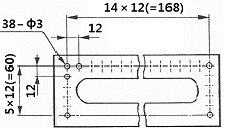
- 24
- 38
- 48
- 60
(정답률: 85%)
52. 다음 중 도면의 일반적인 구비조건으로 거리 가 먼 것은?
- 대상물의 크기, 모양, 자세, 위치의 정보가 있어야 한다.
- 대상물을 명확하고 이해하기 쉬운 방법으로 표현해야 한다.
- 도면의 보존, 검색 이용이 확실히 되도록 내용과 양식을 구비해야 한다.
- 무역과 기술의 국제 교류가 활발하므로 대상물의 특징을 알 수 없도록 보안성을 유지해야 한다.
(정답률: 90%)
53. 그림과 같은 용접기호에서 a7이 의미하는 뜻으로 알맞은 것은?
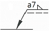
- 용접부 목 길이가 7㎜이다.
- 용접 간격이 7㎜이다.
- 용접 모재의 두께가 7㎜이다.
- 용접부 목 두께가 7㎜ 이다
(정답률: 56%)
54. 일반적으로 표면의 결 도시 기호에서 표시하지 않는 것은?
- 표면 재료 종류
- 줄무늬 방향의 기호
- 표면의 파상도
- 컷오프값, 평가 길이
(정답률: 37%)
55. 치수 숫자와 함께 사용되는 기호가 바르게 연결된 것은?
- 지름 : P
- 정사각형 : □
- 구면의 지름 : ∅
- 구의 반지름 : C
(정답률: 76%)
56. 그림과 같은 입체도에서 화살표 방향을 정면으로 할 때 제3각법으로 올바르게 정투상한 것은?
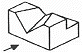
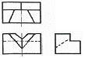
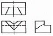
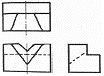
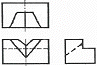
(정답률: 58%)
57. 다음 중 일반구조용 압연강재의 KS 재료 기호는?
- SS 490
- SSW 41
- SBC 1
- SM 400A
(정답률: 55%)
58. 배관의 접합 기호 중 플랜지 연결을 나타내는 것은?
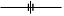
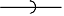
(정답률: 64%)
59. 그림에서 '6.3' 선이 나타내는 선의 명칭으로 옳은 것은?
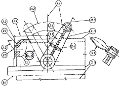
- 가상선
- 절단선
- 중심선
- 무게 중심선
(정답률: 76%)
60. 다음 중 직원뿔 전개도의 형태로 가장 적합한 형상은?
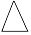
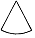
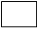
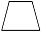
(정답률: 82%)